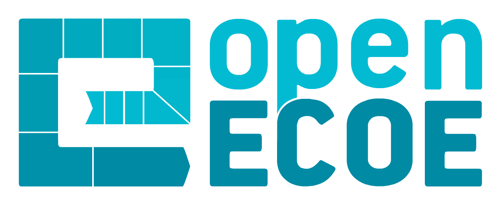

<nz-layout class="layout" >
  <nz-header>
    <div class="logo" style="vertical-align: middle;float: left;">
      <a (click)="isCollapsed = !isCollapsed" style="margin-right: 13px;font-size: 30px;">
        <i nz-icon [nzType]="isCollapsed ? 'menu-unfold' : 'menu-fold'"></i>
      </a>
      
    </div>
    
    <app-usermenu style="margin: auto;"></app-usermenu>

    <app-submenu [submenuSelected]="'ECOE'" style="float: right;padding-right: 2em;"></app-submenu>


  </nz-header>

  <nz-content>
    <div class="inner-nz-content">
      <nz-drawer [nzVisible]="isCollapsed" [nzPlacement]="'left'" [nzWidth]="320" (nzOnClose)="isCollapsed = !isCollapsed" [nzBodyStyle]="{'padding':'0'}">
        <app-menu (menu_close_event)="toCollapse($event)"></app-menu>
      </nz-drawer>
  
      <div class="long-div">
        <router-outlet></router-outlet>
      </div>
    </div>
    <nz-footer>
      <label>openECOE {{year}} - Universitas Miguel Hernández</label>
    </nz-footer>
  </nz-content>


</nz-layout>
